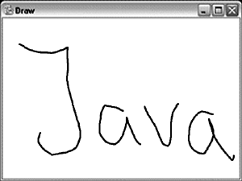

Обработка пользовательских событий
Весь предыдущий раздел "Дерево компонентов" был посвящен заданию внешнего вида пользовательского интерфейса. Однако до сих пор он был статическим. Перейдем теперь к рассмотрению правил обработки различных событий, которые могут возникать как результат действий пользователя, и не только.
Модель обработки событий построена на основе стандартного шаблона проектирования ООП Observer/Observable. В качестве наблюдаемого объекта выступает тот или иной компонент AWT. Для него можно задать один или несколько классов-наблюдателей. В AWT они называются слушателями (listener) и описываются специальными интерфейсами, название которых оканчивается на слово Listener. Когда с наблюдаемым объектом что-то происходит, создается объект "событие" (event), который "посылается" всем слушателям. Так слушатель узнает, например, о действии пользователя и может на него отреагировать.
Каждое событие является подклассом класса java.util.EventObject. События пакета AWT, которые и рассматриваются в данной лекции, являются подклассами java.awt.AWTEvent. Для удобства классы различных событий и интерфейсы слушателей помещены в отдельный пакет java.awt.event.
Прежде, чем углубляться в особенности событий, рассмотрим, как они применяются на практике, на примере простейшего события – ActionEvent.
Событие ActionEvent
Рассмотрим появление события ActionEvent на примере нажатия на кнопку.
Предположим, в нашем приложении создается кнопка сохранения файла:
Button save = new Button("Save");
add(save);Теперь, когда окно приложения с этой кнопкой появится на экране, пользователь сможет нажать ее. В результате AWT сгенерирует ActionEvent. Чтобы получить и обработать его, необходимо зарегистрировать слушателя. Название нужного интерфейса прямо следует из названия события – ActionListener. В нем всего один метод (в некоторых слушателях их несколько), который имеет один аргумент – ActionEvent.
Объявим класс, который реализует этот интерфейс:
class SaveButtonListener
implements ActionListener {
private Frame parent;
public SaveButtonListener(Frame parentFrame)
{
parent = parentFrame;
}
public void actionPerformed(ActionEvent e)
{
FileDialog fd = new FileDialog(parent,
"Save file", FileDialog.SAVE);
fd.setVisible(true);
System.out.println(fd.getDirectory()+"/"+
fd.getFile());
}
} Конструктор класса требует в качестве параметра ссылку на родительский фрейм, без которого не удастся создать FileDialog. В методе actionPerformed класса ActionListener описываются действия, которые необходимо предпринять по нажатию пользователем на кнопку. А именно, открывается файловый диалог, с помощью которого определяется путь сохранения файла. Для нашего примера достаточно вывести этот путь на консоль.
Следующий шаг – регистрация слушателя. Название соответствующего метода снова прямо следует из названия интерфейса – addActionListener.
save.addActionListener(
new SaveButtonListener(frame));
Все необходимое для обработки нажатия пользователем на кнопку сделано. Ниже приведен полный листинг программы:
После запуска программы появится фрейм с одной кнопкой "Save". Если нажать на нее, откроется файловый диалог. После выбора файла на консоли отображается полный путь к нему.
События AWT
Итак, для каждого события AWT определен класс XXEvent, интерфейс XXListener, а в компоненте-источнике событий – метод для регистрации слушателя addXXListener.
Совсем не обязательно, чтобы одно событие могло порождаться лишь одним компонентом как результат какого-то одного действия пользователя. Например, рассмотренный ActionEvent генерируется после нажатия на кнопку (Button), после нажатия клавиши Enter в поле ввода текста (TextField), при двойном щелчке мыши по элементу списка (List) и т.д. Узнать, какие события генерирует тот или иной компонент, можно по наличию методов addXXListener.
Многие слушатели, в отличие от ActionListener, имеют более одного метода для различных видов событий. Например, MouseMotionListener наблюдает за движением мыши и имеет два метода – mouseMoved (обычное движение) и mouseDragged (перемещение с нажатой кнопкой мыши). Иногда бывает необходимо работать лишь с одним методом, остальные приходится объявлять и оставлять пустыми. Чтобы избежать этой бесполезной работы, в пакете java.awt.event объявлены вспомогательные классы-адаптеры, например, MouseMotionAdapter (название прямо следует из названия слушателя). Эти классы наследуются от Object и реализуют соответствующий интерфейс. Адаптер – абстрактный класс, но абстрактных методов в нем нет, они все объявлены пустыми. От такого класса можно наследоваться и переопределить только те методы, которые нужны для приложения.
Классы сообщений (event) содержат вспомогательную информацию для обработки события. Метод getSource() возвращает объект-источник события. Конкретные наследники AWTEvent могут иметь дополнительные методы. Например, MouseEvent сообщает о нажатии кнопки мыши, а его методы getX и getY возвращают координаты точки, где это событие произошло.
Наряду с методом addXXListener важную роль играет removeXXListener. Поскольку в Java ненужные объекты удаляются из памяти автоматическим сборщиком мусора, который подсчитывает ссылки на объекты, важно следить за тем, чтобы не оставалось ссылок на ненужные объекты. Если слушатель уже выполнил свою роль и более не нужен, то явно в программе может не остаться ссылок на него, однако компонент будет хранить его в своем списке слушателей. Чтобы дать сработать garbage collector, необходимо воспользоваться методом removeXXListener.
Рассмотрим обзорно все события AWT и соответствующих им слушателей, определенных в Java начиная с версии 1.1.
MouseMotionListener и MouseEvent
Это событие рассматривалось выше в примере. Оно отвечает за перемещение курсора мыши. Соответствующий слушатель имеет два метода – mouseMoved для обычного перемещения и mouseDragged для перемещения с нажатой кнопкой мыши. Обратите внимание, что этот слушатель работает не с событием MouseMotionEvent (такого класса нет), а с MouseEvent, как и MouseListener.
MouseListener и MouseEvent
Этот слушатель имеет методы mouseEntered и mouseExited. Первый вызывается, когда курсор мыши появляется над компонентом, а второй – когда выходит из его границ.
Для обработки нажатий кнопки мыши служат три метода: mousePressed, mouseReleased и mouseClicked. Если пользователь нажал, а затем отпустил кнопку, то слушатель получит все три события в указанном порядке. Если щелчков было несколько, то метод getClickCount класса MouseEvent вернет количество. Как уже указывалось, методы getX и getY возвращают координаты точки, где произошло событие. Чтобы определить, какая кнопка мыши была нажата, нужно воспользоваться методом getModifiers и сравнить результат с константами:
(event.getModifiers() &
MouseEvent.BUTTON1_MASK)!=0
Как правило, первая кнопка соответствует левой кнопке мыши.
KeyListener и KeyEvent
Этот слушатель отслеживает нажатие клавиш клавиатуры и имеет три метода: keyTyped, keyPressed, keyReleased. Первый отвечает за ввод очередного Unicode-символа с клавиатуры. Метод keyPressed сигнализирует о нажатии, а keyReleased – об отпускании некоторой клавиши. Взаимосвязь между этими событиями может быть нетривиальной. Например, если пользователь нажмет и будет удерживать клавишу Shift и в это время нажмет клавишу "A", произойдет одно событие типа keyTyped и несколько keyPressed/Released. Если пользователь нажмет и будет удерживать, например, пробел, то после первого keyPressed будет многократно вызван метод keyTyped, а после отпускания – keyReleased.
В классе KeyEvent определено множество констант, которые позволяют точно идентифицировать, какая клавиша была нажата и в каком состоянии находились служебные клавиши (Ctrl, Alt, Shift и так далее).
FocusListener и FocusEvent
В каждом приложении один из компонентов обладает фокусом и может получать события от клавиатуры. Фокус можно переместить, например, щелкнув мышкой по другому компоненту, либо нажав клавишу Tab.
Интерфейс FocusListener содержит два метода – focusGained и focusLost (получен/потерян).
TextListener и TextEvent
Компоненты-наследники TextComponent отвечают за ввод текста и порождают TextEvent. Слушатель имеет один метод textValueChanged. С его помощью можно отслеживать каждое изменение текста, чтобы, например, выдавать пользователю подсказку, основываясь на первых введенных символах.
ItemListener и ItemEvent
Это событие могут генерировать такие классы, как Checkbox, Choice, List. Слушатель имеет один метод itemStateChanged, который сигнализирует об изменении состояния элементов.
AdjustmentListener и AdjustmentEvent
Это событие генерируется компонентом ScrollBar. Слушатель имеет один метод adjustmentValueChanged, сигнализирующий об изменении состояния полосы прокрутки.
WindowListener и WindowEvent
Это событие сигнализирует об изменении состояния окна (класс Window и его наследники).
Рассмотрим особо один из методов слушателя – windowClosing. Этот метод вызывается, когда пользователь предпринимает попытку закрыть окно, например, нажимая на соответствующую кнопку в заголовке окна. Мы видели из примеров ранее, что в Java окна при этом не закрываются. Дело в том, что AWT лишь посылает WindowEvent в ответ на такое действие, а инициировать закрытие окна должен программист:
public class WindowClosingAdapter
extends WindowAdapter {
public void windowClosing(WindowEvent e)
{
((Window)e.getSource()).dispose();
}
}Объявленный адаптер в методе windowClosing получает ссылку на окно, от которого пришло событие. Обычно мы пользовались методом setVisible(false), чтобы сделать компонент невидимым. Но поскольку Window автоматически порождает окно операционной системы, существует специальный метод dispose, который освобождает все системные ресурсы, связанные с этим окном.
Когда окно будет закрыто, у слушателя вызывается еще один метод – windowClosed.
ComponentListener и ComponentEvent
Это событие отражает изменение основных параметров компонента – положение, размер, свойство visible.
ContainerListener и ContainerEvent
Это событие позволяет отслеживать изменение списка содержащихся в этом контейнере компонент.
С развитием Java в AWT появляются и другие события, например, позволяющие поддерживать колесико мыши. Однако все они работают по точно такой же схеме, а потому их можно легко освоить самостоятельно.
Обработка событий с помощью внутренних классов
Еще в лекции, посвященной объявлению классов, было указано, что в теле класса можно объявлять внутренние классы. До сих пор такая возможность не была востребована в наших примерах, однако обработка событий AWT – как раз удобный случай рассмотреть такие классы на примере анонимных классов.
Предположим, в приложение добавляется кнопка, которой следует добавить слушателя. Зачастую бывает удобно описать логику действий в отдельном методе того же класса. Если вводить слушателя, как делалось раньше – в отдельном классе, то это сразу порождает ряд неудобств: появляется новый, малосодержательный класс, которому к тому же необходимо передать ссылку на исходный класс и так далее.
Гораздо удобнее поступить следующим образом:
Button b = new Button();
b.addActionListener(new ActionListener()
{
public void actionPerformed(ActionEvent e)
{
processButton();
}
};
Рассмотрим подробно, что происходит в этом примере. Сначала создается кнопка, у которой затем вызывается метод addActionListener. Обратим внимание на аргумент этого метода. Может сложится впечатление, что производится попытка создать экземпляр интерфейса (new ActionListener()), однако это невозможно. Дело меняет фигурная скобка, которая указывает, что порождается экземпляр нового класса, объявление которого последует за этой скобкой. Класс наследуется от Object и реализует интерфейс ActionListener. Ему необходимо реализовать метод actionPeroformed, что и делается. Обратите внимание на еще одну важную деталь – в этом методе вызывается processButton. Это метод, который мы планировали разместить во внешнем классе. Таким образом, внутренний класс может напрямую обращаться к методам внешнего класса.
Такой класс называется анонимным, он не имеет своего имени. Однако правило, согласно которому компилятор всегда создает .class-файл для каждого класса Java, действует и здесь. Если внешний класс называется Test, то после компиляции появится файл Test$1.class.
Пример приложения, использующего модель событий
В заключение темы, посвященной событиям, рассмотрим пример приложения, которое активно их использует.
Попробуем написать примитивный графический редактор, который позволяет рисовать с помощью курсора – если перемещать его с нажатой кнопкой мыши, то будет появляться линия. Нажатие пробела очищает поле.
Класс DrawCanvas и является тем полем, на котором можно рисовать. В его конструкторе инициализируются все необходимые слушатели. В случае прихода события инициализируется перерисовка (метод repaint), логика которой описана в update. Запускаемый метод main инициализирует frame, не забывая про windowClosing.
В результате можно что-нибудь нарисовать:

Рис.
|